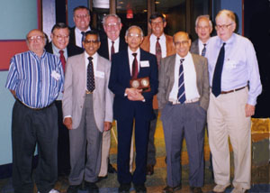

Army Wilks Award
Winners in Attendance

Front row: Bernard Harris, Jayaram Sethuraman, C.R. Rao (2000 winner), Nozer Singpurwalla, James Thompson. Back row: Emanuel Parzen, Edward Wegman, Douglas Tang, W. J. Conover, Robert Launer.
Return to ACAS Home Page